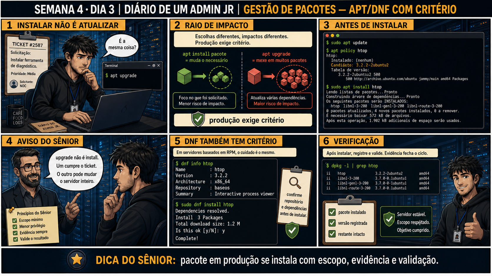

DIARIO DE UM ADMIN JR. | FASE 1 — LINUX, DO BÁSICO AO AVANÇADO
Antes de começar — 20 segundos de memória (Dia 2)
1. Ontem, qual foi o primeiro comando obrigatório antes de comparar timestamps entre dois servidores diferentes? 2. Ontem a diferença que importava era o RAIO de uma investigação: um servidor ou dois. Hoje a diferença que importa é o raio de uma AÇÃO: instalar um pacote ou atualizar todos. O que isso tem em comum com ontem?
1.timedatectl, para confirmar que os fusos horários das duas máquinas estavam alinhados. 2. As duas lições são sobre medir o raio de impacto antes de agir: ontem, saber se o problema estava numa máquina ou em duas; hoje, saber se o comando mexe só no pacote pedido (install) ou no sistema inteiro (upgrade). Confundir o raio de impacto é o erro central dos dois dias.
🔗 Conecta com as últimas duas semanas: você já sabe investigar carga, log e
correlação entre servidores. Hoje entra uma nova categoria de mudança real: instalar software em produção,
com o mesmo cuidado de escopo mínimo que já valeu pra permissões e remoção de arquivos.
🔓 Privilégio de hoje: instalar pacotes em produção com critério. Você ganha
autorização pra usar apt/dnf install — nunca upgrade quando o pedido é instalar uma ferramenta específica.
Semana 4 · Dia 3 | Nível Júnior
Gestão de Pacotes: apt/dnf com Critério
upgrade não é install — um mexe só no que você pediu, o outro mexe no sistema inteiro
ANTES DE ALTERAR, OBSERVE. DEPOIS DE ALTERAR, VALIDE.

1. O chamado
#2587PRIORIDADE MÉDIA13:40aberto por: colega de equipe
host: srv-app-03 · serviço: ferramentas de diagnóstico
"Preciso que instale uma ferramenta de diagnóstico neste servidor de produção, o htop."
Seu dedo já está digitando apt upgrad. Isso é a mesma coisa que instalar só o htop?
💡 Passa o mouse nas palavras destacadas pra ver uma dica rápida — clica se quiser a explicação completa com analogia.
2. O sênior te conta
🧑🏫 antes dos termos técnicos, a história de hoje
Hoje o ticket pedia pra instalar uma ferramenta de diagnóstico. O dedo do Júnior já estava digitando
apt upgrad — não terminou nem de escrever a palavra certa e eu já vi o problema. "Upgrade
não é a mesma coisa que install", disse. Ele achava que eram sinônimos, ou pelo menos que um "já fazia o
trabalho do outro".
Expliquei o raio de impacto: install muda só o pacote pedido, com as dependências diretas
dele — é comprar exatamente o item da lista de compras. upgrade mexe potencialmente em TODOS
os pacotes já instalados no sistema — é trocar o estoque inteiro da loja de uma vez, quando ninguém
pediu isso. Num servidor de produção, essa diferença de escopo é gigante.
Fizemos certo: apt update (atualizar o catálogo), apt policy htop (ver a
versão candidata antes de instalar), e só então apt install htop. A saída mostrou 4 pacotes
— htop e três bibliotecas. O Júnior estranhou: "instalei um só, por que apareceram quatro?". Expliquei:
são dependências diretas, o htop precisa delas pra funcionar — ainda dentro do escopo do que foi pedido,
não é o sistema inteiro sendo mexido.
3. Decodificador de conceitos
Clica em qualquer termo pra ver a definição completa e uma analogia do dia a dia:
4. Ferramentas e leitura da evidência
Comando
O que observar e por que importa
apt policy pacote
Mostra a versão candidata antes de instalar, sem alterar nada ainda.
apt install pacote
Instala só o pacote pedido e suas dependências diretas, mostrando exatamente o que vai mudar.
dpkg -l | grep pacote
Confirma a instalação e a versão exata depois de concluída.
5. Laboratório guiado — pegue na mão, comando por comando
Segurança: execute os testes apenas em VM descartável e confirme nomes de discos, hosts e arquivos antes de cada comando.
Ação: Atualize a lista de pacotes e verifique a versão candidata de uma ferramenta ainda não instalada.
sudo apt update
apt policy htop
Resultado esperado: versão candidata mostrada, nada ainda instalado.
Por que fizemos isso: ver a versão ANTES de instalar é o que permite confirmar que você vai receber o que espera, sem surpresas depois.
Cilada comum: pular o apt update achando que a lista de pacotes já está atualizada — sem isso, apt policy pode mostrar informação desatualizada.
Ação: Instale a ferramenta, lendo com atenção a lista antes de confirmar.
sudo apt install htop
Resultado esperado: lista de pacotes e dependências revisada antes da confirmação.
Por que fizemos isso: ler a lista de "será instalado" antes de confirmar é o que te dá a chance de perceber se algo além do esperado está prestes a mudar.
Cilada comum: confirmar instalações com "yes" automático sem ler a lista — como quase aconteceu com o apt upgrad de hoje, digitar sem olhar é onde o erro entra.
Se o seu resultado foi diferente
"htop is already the newest version" logo no primeiro comando → provavelmente sobrou de um laboratório anterior nesta VM. Rode sudo apt remove --purge htop primeiro para começar do zero e sentir a diferença de verdade.
Ação: Confirme a instalação e a versão exata.
dpkg -l | grep htop
Resultado esperado: pacote listado com versão exata instalada.
Por que fizemos isso: validar depois é o que fecha o ciclo — confirma que a versão candidata prometida é realmente a que foi instalada.
Cilada comum: assumir que "instalou sem erro" já é suficiente, sem confirmar a versão exata que ficou registrada no sistema.
🧑🏫 Aqui entra o Mentor (em breve): se uma lista de dependências parecer maior do que o esperado, este é o ponto onde o chat com o Sênior-IA vai ajudar a entender por que cada uma é necessária.
Ação: Compare o que um upgrade completo afetaria, sem rodar de verdade.
apt list --upgradable
🔍 Detalhar esse comando
apt list
Lista pacotes conforme um critério.
--upgradable
Filtra para mostrar só os pacotes que têm uma versão mais nova disponível — mostra o TAMANHO do impacto que um 'apt upgrade' teria, sem executar nada.
Resultado esperado: lista de pacotes que teriam sido afetados por upgrade, comparada com a instalação pontual já feita.
Por que fizemos isso: ver essa lista, sem executar, deixa concreto o tamanho do raio de impacto que um upgrade teria — muito maior que o install pontual que você acabou de fazer.
Cilada comum: rodar apt upgrade "só pra ver o que aconteceria" em VM que não é totalmente descartável — mesmo curiosidade merece ambiente isolado.
Ação: Documente pacote pedido, versão instalada, dependências, e confirmação de escopo.
# não é comando de shell — é o registro final
# ex: "Pacote: htop. Versão: 3.2.2-2ubuntu2. Dependências: libnl-3-200 e outras 2. Escopo: só o pedido, resto do sistema intocado."
Resultado esperado: registro completo reproduzindo o painel 6 da prancha de hoje.
Por que fizemos isso: documentar o escopo explicitamente ("resto do sistema intocado") é o que prova, não só afirma, que a instalação foi feita com o cuidado certo.
Cilada comum: documentar só "instalei o htop" sem mencionar a verificação de escopo — sem isso, quem revisar depois não sabe se você confundiu install com upgrade ou não.
CENÁRIOAção: Remova o pacote instalado no laboratório e confirme que o servidor voltou ao estado anterior à aula.
Desinstala um pacote, mas por padrão mantém arquivos de configuração no disco.
--purge
Remove também os arquivos de configuração do pacote — desinstalação completa, sem deixar resíduo.
htop
O pacote instalado nesta mesma aula, agora removido para deixar o sistema como estava antes.
Resultado esperado: mensagem "pacote removido" — dpkg -l não lista mais o htop.
Por que fizemos isso: você instalou o htop só para observar a diferença entre install e upgrade na prática — deixá-lo instalado no laboratório sem necessidade é exatamente o tipo de "pacote sobrando sem dono claro" que uma auditoria de sistema pega depois.
Cilada comum: esquecer de remover o pacote de teste. Meses depois, alguém revisando os pacotes instalados encontra o htop e não sabe se foi uma instalação real de produção ou sobra de laboratório.
Se o seu resultado foi diferente
"dpkg: warning: while removing htop, directory not empty" → normal se algum arquivo de configuração ficou para trás — não é erro grave, mas se quiser limpeza total use sudo apt autoremove em seguida.
6. Antes de ver as opções — tenta responder
🧠 Recall ativo: qual é a diferença de raio de impacto entre apt install pacote e
apt upgrade?
install muda
só o que foi pedido, com dependências mínimas. upgrade
mexe potencialmente em TODOS os pacotes já instalados no sistema — raio de impacto muito maior, nunca
confundir os dois em produção.
QUESTÃO 1 de 3
7. Questão comentada — clica numa alternativa
O ticket pede pra instalar uma ferramenta específica de diagnóstico. Qual é a
sequência correta de comandos?
💡 Analogia do Sênior para Fixar: O comando 'apt update' vs 'apt upgrade' é como baixar o cardápio do restaurante vs pedir a comida: o update só atualiza a lista de preços; o upgrade cozinha e entrega o prato.
QUESTÃO 2 de 3 — cenário de erro real
7.1 A instalação mostra "4 novos pacotes instalados, 0 a remover" — isso é normal?
O comando apt install htop instalou 4 pacotes: htop e três bibliotecas
(libnl-3-200, libnl-genl-3-200, libnl-route-3-200).
Como interpretar corretamente essa lista de 4 pacotes instalados?
💡 Analogia do Sênior para Fixar: O arquivo '/etc/apt/sources.list' é a lista de supermercados confiáveis: define de quais servidores oficiais o sistema baixa pacotes assinados digitalmente.
QUESTÃO 3 de 3 — detalhe que confunde todo iniciante
7.2 "dnf funciona igualzinho ao apt, só muda o nome do comando?"
Um colega assume que em servidores baseados em RPM (dnf), o cuidado com escopo mínimo não se aplica do
mesmo jeito.
Essa suposição está correta?
💡 Analogia do Sênior para Fixar: Remover pacotes com 'apt purge' em vez de 'apt remove' é como mudar de casa levando os móveis e desinstalando as cortinas: apaga também os arquivos de configuração do /etc.
8. Procedimento profissional
Atualize a lista de pacotes disponíveis (apt update / dnf check-update).
Verifique a versão candidata antes de instalar (apt policy / dnf info).
Instale só o pacote pedido, nunca upgrade quando o pedido é específico.
Confirme a instalação e a versão exata (dpkg -l / rpm -q).
Documente pacote, versão e dependências instaladas.
Prevenção — o que evita repetir esse tipo de problema
Padronize um alias ou wrapper de "instalação segura" que sempre passa por policy antes de
install, reduzindo a chance de digitar upgrade por engano num momento de pressa. Documente no runbook do
time a regra explícita: upgrade completo de sistema é ação planejada, agendada e aprovada — nunca resposta
a um ticket de instalação pontual.
9. Validação e encerramento
Apenas o pacote pedido foi instalado, nunca um upgrade completo do sistema.
A versão foi conferida antes de instalar (apt policy / dnf info).
A instalação foi validada depois, com versão exata confirmada.
O restante do sistema permaneceu intocado.
Rollback e limites
Rollback de uma instalação é remover o pacote específico (apt remove pacote) —
simples justamente porque o escopo foi mínimo. Se um upgrade completo tivesse sido rodado por engano, o
rollback seria muito mais complexo e arriscado.
💡 Sobre repetição espaçada: "escopo mínimo, nunca mais que o pedido" conecta
com chmod/chown (menor privilégio) e com rm com segurança (caminho confirmado) — a mesma disciplina, agora
aplicada a pacotes. O Anki vai conectar os três.
10. Resposta final
Alternativa correta: B. Nesta aula, a decisão correta foi apt update,
apt policy pacote, e apt install pacote — escopo mínimo, só o que foi pedido. O ponto central do caso é
este: pacote em produção se instala com escopo, evidência e validação.
🔓 O que você desbloqueou hoje
Capacidade de instalar software em produção com critério e escopo mínimo.
Amanhã você aprende gestão de usuários — useradd, usermod, e o perigo clássico do -G sem -a.